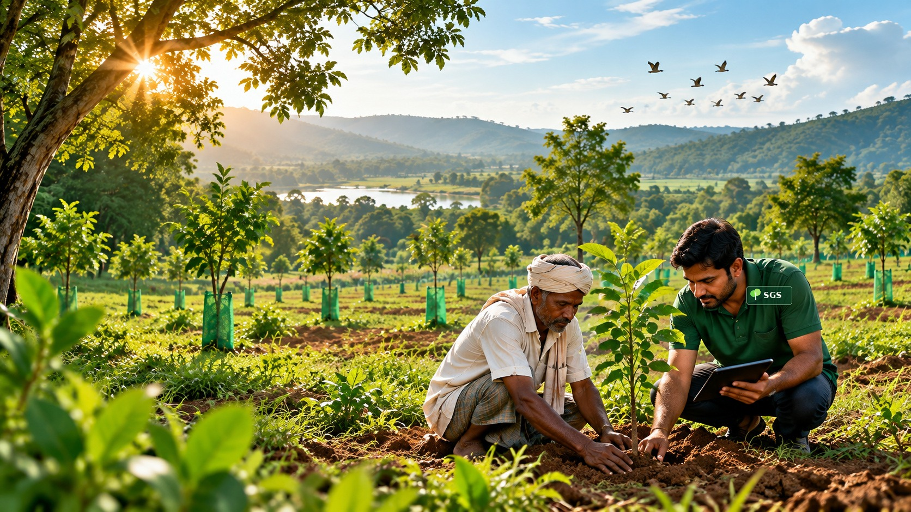
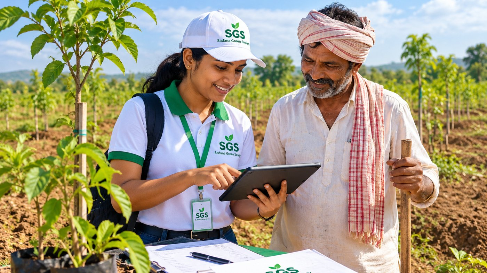
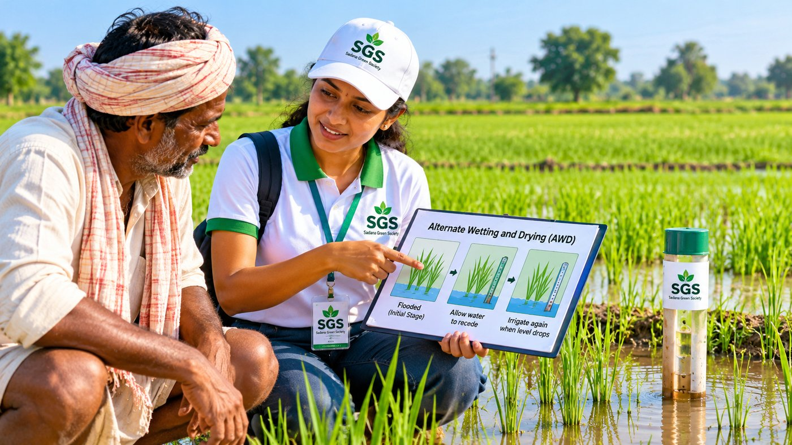

Recognised & Active Across
🌿 Andhra Pradesh
🌾 Telangana
🌱 Karnataka
♻️ Voluntary Carbon Market
💧 AWD Paddy Water Stewardship
Our Ground Initiatives
Showcasing the Beauty and Innovation of Sustainable Agriculture
Real field programs transforming landscapes and strengthening farmer household incomes.



120,000+
Farmers in Carbon Programmes
5,000+
Farmers Practicing AWD Paddy
3
States: AP, Telangana, Karnataka
16+
Timber & Fruit Species Promoted

B. Raghu Bhaskar
Founder & President, SGS
Leadership & Mission
Read Our Journey
→
Empowering Farmers. Restoring Ecosystems.
Headquartered in Kurnool, Sadana Green Society works hand-in-hand with agricultural communities, technical registries, and institutional partners across South India.
Under the visionary leadership of B. Raghu Bhaskar, SGS bridges grassroots agricultural practices with modern climate science. We ensure that every tree planted and every cubic meter of water conserved produces measurable environmental and economic benefits.
1,25,000+
Registered Farm Holdings
100% Traceable
GPS Geotagged Field Plots
Comprehensive Solutions
Programmes for Modern, Climate-Resilient Agriculture
Practical, scalable pathways delivering ecological restoration and reliable income.
Agroforestry & Plantations
Planting high-value timber and fruit trees on farmland edges and blocks. Cultivating Teak, Melia dubia, Red Sanders, and Casuarina alongside conventional seasonal crops.
Carbon Credit Projects
Rigorous baseline surveys, GPS perimeter mapping, and verified carbon emission reductions under leading carbon methodologies with direct revenue sharing to enrolled farmers.
Alternate Wetting & Drying
Transforming paddy cultivation with calibrated field water tubes. Drying periods interrupt anaerobic methane production, saving pumping power while preserving grain yields.
Grassroots Methodology
How Sadana Green Society Works With Farmers
A proven 4-stage framework ensuring high tree survival, transparent water management, and sustainable livelihoods.
01
1. Listen & Assess
Conduct on-site village consultations to understand land boundaries, soil chemistry, and verified water availability across farm plots.
02
2. Enrol & Verify
Record high-accuracy GPS coordinates, conduct 2014–2026 non-deforestation baseline mapping, and match suitable timber/fruit tree species.
03
3. Implement & Distribute
Deliver certified acclimatised saplings from central nurseries, install AWD field water tubes, and provide bio-fertiliser agronomic guidance.
04
4. Monitor & Report
Perform recurring geo-tagged survival audits, measure biomass carbon growth, and submit transparent verification reports to registries.
Plant Variety Explorer
Plants We Promote Across South India
Carefully matched to local soil conditions, irrigation access, and market demand.
Teak
టేకు- High-value long-term asset
- Exceptional timber durability
- Suited for deep, moist soils
Melia dubia
మలబార్ వేప- Rapid 6-8 year harvest cycle
- High demand for plywood & pulp
- Permits early-stage intercropping
Red Sanders
ఎర్రచందనం- Endemic to Eastern Ghats
- Thrives on dry, rocky slopes
- Very high commercial value
Bamboo
వెదురు- Harvest culms without replanting
- Powerful root soil-binding
- Rapid carbon sequestration
Mango
మామిడి- Steady seasonal harvest revenue
- Renowned Banganapalli demand
- Dense carbon-storing canopy
Custard Apple
సీతాఫలం- Grows in dry, rocky Rayalaseema
- Very low water requirements
- High pulp market value
Guava
జామ- Bears fruit in early seasons
- High vitamin C nutrition
- Adapts to light & sandy soils
Amla
ఉసిరి- Extreme drought tolerance
- Processed into pickles & powders
- Steady commercial pricing
In The Media
Newspaper Coverage & Press Recognition
Highlighting Sadana Green Society’s farmer mobilization and agroforestry awareness.

Andhra Pradesh Press
మామిడి తోటల సాగుపై రైతులకు ప్రోత్సాహం
Encouraging farmers on mango orchard development and sustainable agroforestry practices.

Regional Daily
పండ్ల తోటల పెంపకంపై ప్రోత్సాహకాలు
Incentives and field technical support for fruit orchard cultivation in drought-prone areas.

Agricultural News
వరి సాగులో కొత్త బాట
Adopting Alternate Wetting & Drying in paddy farming to conserve groundwater reserves.